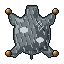
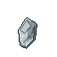

Codex
Collection
Old Scrolls
Achievements
Paths Above
Seasons
The Collection
Page 4 of 14
Cards filled 2 / 68
Next at 10: the Collector title, drops +1%
Contents
Reed Marsh
4 beasts · a card fills at 50
I
II

50
Hollowed Boarlet
Rank 1 · Hollowed · Lv 7–12
Charges twice. Tamed, it becomes a Cleansed Boarlet.
Drops  Hollow Shard
Hollow Shard

Grey Hide68defeated
50 · filled
500 · for seal II

Greyfin
Rank 1 spirit beast · Lv 7–11
Drops

Tiny Hollow Shard4/ 50
7
◂ Stonewall Quarry
Reed Marsh
Monster Level 4–12

? ? ?
Not yet met · Lives at Marsh Edge
0/ 50

? ? ?
Not yet met · Lives at Marsh Edge
0/ 50
The page's seals
I
Every card at 50
Hollow Ward +2
54 / 200
1 of 4 cards filled
II
Every card at 500, after seal I
Healing received +1% · a Bestiary Leaf
72 / 2,000
8
Bamboo Grove ▸